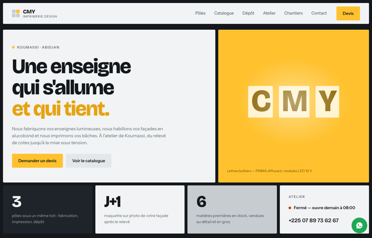

Direction 1
Calepinage
Un bardage en alucobond est une mosaïque de panneaux séparés par un joint creux de 10 mm. La page est calepinée pareil : le fond sombre est le joint, chaque bloc est un panneau.
- Palette
- Composite gris et aluminium brossé. Une seule couleur vive : le jaune d'une LED blanc chaud.
- Type
- Bricolage Grotesque · Instrument Sans
- Signature
- L'enseigne « CMY » du bandeau s'allume lettre après lettre, dans l'ordre du câblage.
- Atout
- La plus lisible en diagonale : chaque tuile se comprend seule.